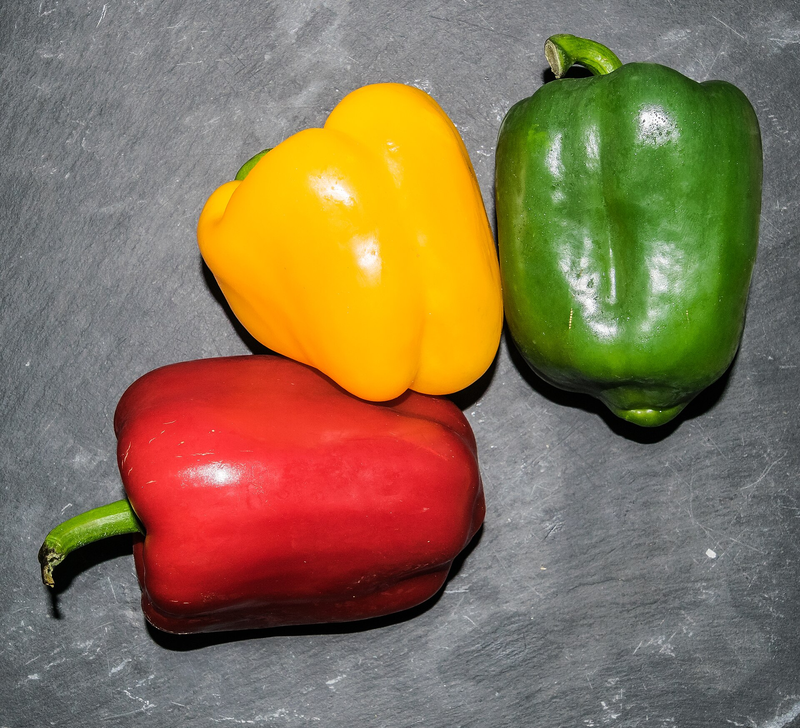

Árvores e Frutíferas
Pimenta-pé-de-padre
Pimenta · espécie não especificada
A planilha registra o nome popular “pimenta pé de padre”, mas não informa a espécie ou cultivar. Como nomes populares de pimentas variam bastante, esta página mantém o nome do cadastro sem afirmar uma identificação botânica. A foto mostra frutos de Capsicum como ilustração, não como identificação do exemplar do hotel.
- Nome no cadastro
- Pimenta pé de padre
- Grupo ilustrado
- Pimentas do gênero Capsicum
- Identificação
- Espécie do exemplar não informada